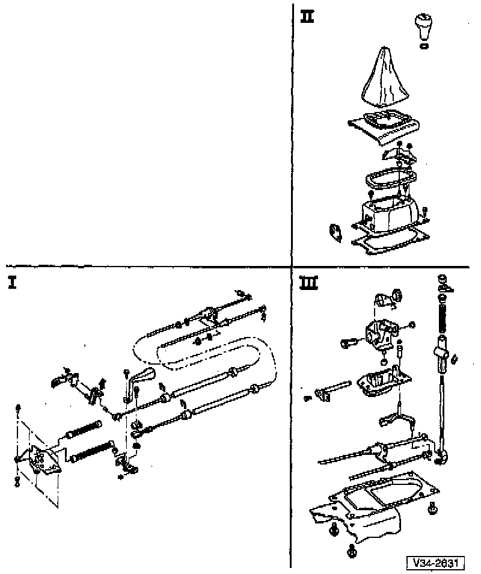

Shifter M/T: Service and Repair: Overview

CAUTION:
^ Before working on the gear selector mechanism, disconnect the Battery Ground (GND) strap in the engine compartment
^ On vehicles equipped with an anti-theft radio, make sure you know the correct radio activation code before disconnecting the battery.
I - Gear selector control cables, removing and installing, refer to Replacement. Service and Repair
II - Gear selector housing
III - Shift lever
NOTE: Before removing the gear selector mechanism, note the following:
^ Remove the Three Way Catalytic Converter (TWC)
^ Remove the Heat shield
^ To replace the selector cables, first remove the complete gear selector mechanism.
^ Do not kink the selector cables.
^ Lubricate all mounting and contact surfaces MoS2 grease.
^ Gear selector mechanism, adjusting. Adjustments